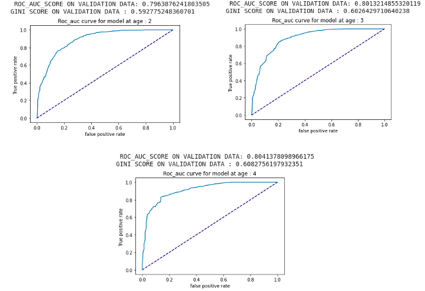
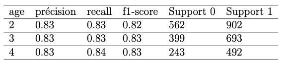

Prédiction articulatoire
Afin de mieux évaluer la capacité d’un enfant à pouvoir prononcer correctement un mot, nous avons décidé de mettre en place plusieurs modeles de classification.
C'est a dire un modèle par âge pivot basé sur un réseau
de neurones à convolution (CNN)
Ce modèle est mis à disposition via un Colab. Il n'est utilisable qu'avec un mot contenant plus de 2 phonèmes et renvoie la confiance du modèle pour que le mot soit bien prononcé par un enfant pour un âge donné.
Ce modèle est donc un outil d'analyse articulatoire des phonèmes chez les enfants (à 2,3 et 4 ans).
Par exemple le mot "trak" sera facilement exprimé par un enfant de 2 ans mais dès le moment ou l'on ajoute une occlusive (donc deux occlusives succinctes comme 't' et 'k' ) le modèle a une confiance très faible et on peut donc conclure que le mot ne pourra pas être dit correctement à 2 ans. Par contre à 4 ans, le modèle est quasiment sûr que cette articulation particulière pourra être prononcée sans difficultés. Ce modèle est un prototype et il est basé sur un corpus particulier, il serait intéressant pour renforcer sa robustesse d'y apporter des corpus différents. Une quantité de données conséquente pourrait nous permettre d'augmenter la capacité à généraliser les prédictions du modèle.
Le modèle a été entraîné sur :
Sur toutes les données, 90% ont été conservées pour l'entraînement et 10% pour la validation. Sur l'ensemble de validation, on obtient les résultats suivants :

On peut constater que le modèle est correct et qu'il généralise assez pour avoir une prédiction exacte de la possibilité pour un enfant à un âge donné de correctement s'exprimer.
